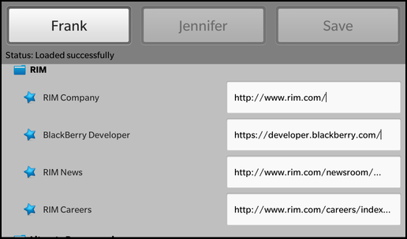

Files:
The QXmlStream Bookmarks example provides a reader for XML Bookmark Exchange Language (XBEL) files using Qt's QXmlStreamReader class for reading, and QXmlStreamWriter class for writing the files.

In this example we'll learn how to use the QXmlStreamReader and QXmlStreamWriter classes to parse, modify and generate an XML document. Additionally we'll see how to generate UI objects (that are described in a QML file) on-the-fly and how to access and modify their properties.
The UI of this sample application consists of three buttons and a container. The first two buttons allow the user to load two different XBEL documents and the third button allows the user to save the currently loaded XBEL document back to file system (including possible changes done to the bookmarks).
The container is the target location for the tree of controls, that visualize the structure of the XBEL document. The XBEL standard defines the elements
The folder is represented by a Container with a folder icon and a title label (FolderItem.qml). It provides a custom property 'tagName' and a property 'title' that is aliased to the 'text' property of the titleField label. So whenever the 'title' property is changed, the 'text' property will be updated.
// Container for the visual representation of a XBEL folder element Container { property string tagName: "folder" property alias title: titleField.text topMargin: 20 leftPadding: 20 Container { layout: StackLayout { orientation: LayoutOrientation.LeftToRight } // A standard ImageView ImageView { imageSource: "asset:///images/folder.png" preferredWidth: 32 preferredHeight: 32 } // A standard Label for the folder title element Label { id: titleField leftMargin: 10 // Defines custom text style textStyle { base: SystemDefaults.TextStyles.SmallText fontWeight: FontWeight.Bold color: Color.White } } } }
The bookmarks are visualized by a Container with a star icon, a title label and a TextField that contains the bookmark URL (BookmarkItem.qml). The TextField is invisible by default and will be faded in when the user clicks on the title label.
// Container for the visual representation of a XBEL bookmark element Container { property string tagName: "bookmark" property alias title: titleField.text property alias url: urlField.text topMargin: 10 leftMargin: 20 leftPadding: 20 Container { layout: StackLayout { orientation: LayoutOrientation.LeftToRight } // A standard ImageView ImageView { verticalAlignment: VerticalAlignment.Center minWidth: 82 minHeight: 62 imageSource: "asset:///images/bookmark.png" scalingMethod: ScalingMethod.AspectFit } // A standard Label for the bookmark title element Label { id: titleField verticalAlignment: VerticalAlignment.Center leftMargin: 10 textStyle { base: SystemDefaults.TextStyles.SmallText color: Color.White } onTouch: { if (event.isDown()) { urlField.visible = !urlField.visible } } } } // A standard TextField for the bookmark url attribute value TextField { id: urlField verticalAlignment: VerticalAlignment.Center leftMargin: 10 visible: false textStyle { base: SystemDefaults.TextStyles.SmallText } } }
A separator is an image of a horizontal line (SeparatorItem.qml).
// Container used to create a separator black visual line Container { property string tagName: "separator" topMargin: 20 leftPadding: 40 rightPadding: 20 ImageView { horizontalAlignment: HorizontalAlignment.Fill imageSource: "asset:///images/separator.png" } }
The business logic of the application is encapsulated in the class App, which is exported to the UI as '_app'.
// A standard Button Button { id: frank layoutProperties: StackLayoutProperties { spaceQuota: 1 } text: qsTr ("Frank") // Load the selected xbel file on click onClicked: { jennifer.opacity = 0.5; save.opacity = 0.5; frank.opacity = 1.0; _app.load ("frank.xbel"); } }
Whenever the user clicks one of the load buttons, the load() method of the App object is invoked.
// A standard Button Button { id: save layoutProperties: StackLayoutProperties { spaceQuota: 1 } text: qsTr ("Save") // Save the changes to a temporary xbel file in the // application tmp/ directory onClicked: { frank.opacity = 0.5; jennifer.opacity = 0.5; save.opacity = 1.0; _app.save (); } }
If the user clicks the 'Save' button, the save() method of the App object is invoked.
// Container for displaying the loaded XBEL output ScrollView { topMargin: 10 scrollViewProperties { scrollMode: ScrollMode.Vertical } layoutProperties: StackLayoutProperties { spaceQuota: 1 } Container { objectName: "treeContainer" leftPadding: 10 rightPadding: 10 bottomPadding: 10 } }
The container has the 'objectName' property set, so that it can be looked up from within C++.
Inside the constructor of App we load the main.qml file and retrieve the C++ object that represents the root node of the QML document. With the findChild() method we look up the Container object where we have assigned 'treeContainer' to the 'objectName' property.
App::App() { // Load the main QML file and make the App object available as context property QmlDocument *qml = QmlDocument::create("asset:///main.qml"); if (!qml->hasErrors()) { qml->setContextProperty("_app", this); Page *appPage = qml->createRootObject<Page>(); if (appPage) { Application::instance()->setScene(appPage); // Retrieve the tree container control from the QML file m_treeContainer = appPage->findChild<Container*>("treeContainer"); } } }
Whenever the user clicks one of the load buttons, the load() method of the App object is invoked with the file name passed as parameter.
void App::load(const QString &fileName) { // Do sanity check if (!m_treeContainer) return; // Update the status property m_status = tr("Loading..."); emit statusChanged(); // Clean all previous generated bookmark controls from the tree container m_treeContainer->removeAll(); // Create the XBEL reader and pass the tree container it will work on XbelReader reader(m_treeContainer); // Open the XBEL file which the user has selected QFile file("app/native/assets/" + fileName); if (!file.open(QIODevice::ReadOnly)) qWarning("unable to open file"); // Parse XBEL file and generate the bookmark controls const bool ok = reader.read(&file); // Update the status property again if (ok) m_status = tr("Loaded successfully"); else m_status = reader.errorString(); emit statusChanged(); }
Inside load() we first remove all previously created controls from the treeContainer and then use the XbelReader class to parse the XML document and generate new controls inside the treeContainer.
If the user clicks the 'Save' button, the save() method of the App object is invoked.
void App::save() { // Do sanity check if (!m_treeContainer) return; // Update the status property m_status = tr("Saving..."); emit statusChanged(); const QString fileName("tmp/streambookmarks.xbel"); // Open the target file where the modified XBEL document will be written to QFile file(fileName); file.open(QIODevice::WriteOnly); // Create the XBEL writer on the tree container and let it generate the XBEL document from the bookmark controls XbelWriter writer(m_treeContainer); const bool ok = writer.writeFile(&file); // Update the status property again if (ok) m_status = tr("Saved successfully"); else m_status = tr("Error while saving"); emit statusChanged(); }
Inside save() we try to open the file 'streambookmarks.xbel' inside the applications temp directory and then we use the XbelWriter class to iterate over the treeContainer, generate the XML document and store it to the file.
The XbelWriter class contains a private instance of QXmlStreamWriter, which provides an XML writer with a streaming API. XbelWriter also has a reference to the Container instance where the bookmark hierarchy is stored.
/** * The XbelWriter is responsible for generating a XBEL document from the * controls in the tree container. * * To generate the XBEL document the XbelWriter uses the QXmlStreamWriter class from Qt. */ class XbelWriter { public: XbelWriter(bb::cascades::Container *treeContainer); // Starts the generation of the XBEL document bool writeFile(QIODevice *device); private: // A helper method that generates an element in the XBEL document for the current control void writeItem(bb::cascades::Control *item); // The XML stream writer that is used to generate the XBEL document QXmlStreamWriter m_xml; // The container object the controls are located in QPointer<bb::cascades::Container> m_treeContainer; };
The XbelWriter constructor accepts a treeContainer to initialize within its definition. We enable QXmlStreamWriter's auto-formatting property to ensure line-breaks and indentations are added automatically to empty sections between elements, increasing readability as the data is split into several lines.
XbelWriter::XbelWriter(Container *treeContainer) : m_treeContainer(treeContainer) { // Make the output of the XML stream writer easier to read for humans m_xml.setAutoFormatting(true); }
The writeFile() function accepts a QIODevice object and sets it using setDevice(). This function then writes the document type definition(DTD), the start element, the version, and treeContainer's top-level items.
bool XbelWriter::writeFile(QIODevice *device) { m_xml.setDevice(device); // Start the creation of the document m_xml.writeStartDocument(); m_xml.writeDTD("<!DOCTYPE xbel>"); // Add the root element with the necessary 'xbel' element and version attribute m_xml.writeStartElement("xbel"); m_xml.writeAttribute("version", "1.0"); // Iterate over the controls of the tree container and generate an XBEL element for each of them for (int i = 0; i < m_treeContainer->count(); ++i) writeItem(m_treeContainer->at(i)); m_xml.writeEndDocument(); return true; }
The writeItem() function accepts a Control object and writes it to the stream, depending on its tagName, which can either be a "folder", "bookmark", or "separator".
void XbelWriter::writeItem(Control *item) { const Container *container = qobject_cast<Container*>(item); /** * Retrieve the tag name and title from the control. * These two properties have been set on the controls by the XbelReader. */ const QString tagName = container->property("tagName").toString(); const QString title = container->property("title").toString(); // Depending on the tag name write a new element to the XBEL document if (tagName == "folder") { m_xml.writeStartElement(tagName); m_xml.writeAttribute("folded", "no"); m_xml.writeTextElement("title", title); // Iterate over the child controls of the container for (int i = 0; i < container->count(); ++i) writeItem(container->at(i)); m_xml.writeEndElement(); } else if (tagName == "bookmark") { m_xml.writeStartElement(tagName); const QString url = container->property("url").toString(); if (!url.isEmpty()) m_xml.writeAttribute("href", url); m_xml.writeTextElement("title", title); m_xml.writeEndElement(); } else if (tagName == "separator") { m_xml.writeEmptyElement(tagName); } }
The XbelReader contains a private instance of QXmlStreamReader, the companion class to QXmlStreamWriter. XbelReader also contains a reference to the Container that is used to group the bookmarks according to their hierarchy.
/** * The XbelReader is responsible for parsing a XBEL file and generating * controls, that represent the bookmark entries, on the tree container. * * To parse the XBEL document the XbelReader uses the QXmlStreamReader class from Qt. */ class XbelReader { public: XbelReader(bb::cascades::Container *treeContainer); // Starts the parsing of the XBEL document bool read(QIODevice *device); // Returns a textual representation of the error if one occurred QString errorString() const; private: // A helper method that parses the root element of a XBEL document void readXBEL(); // A helper method that parses the title attribute of the current element void readTitle(bb::cascades::Container *item); // A helper method that parses a separator element void readSeparator(bb::cascades::Container *item); // A helper method that parses a folder element void readFolder(bb::cascades::Container *item); // A helper method that parses a bookmark element void readBookmark(bb::cascades::Container *item); // A helper method that generates a control for the current XBEL element bb::cascades::Container *createChildItem(bb::cascades::Container *parent); // The XML stream reader that is used to parse the XBEL document QXmlStreamReader m_xml; // The container object the controls are created in QPointer<bb::cascades::Container> m_treeContainer; };
The XbelReader constructor accepts a Container to initialize the treeContainer within its definition.
XbelReader::XbelReader(Container *treeContainer) : m_treeContainer(treeContainer) { }
The read() function accepts a QIODevice and sets it using setDevice(). The actual process of reading only takes place if the file is a valid XBEL 1.0 file. Note that the XML input needs to be well-formed to be accepted by QXmlStreamReader. Otherwise, the raiseError() function is used to display an error message. Since the XBEL reader is only concerned with reading XML elements, it makes extensive use of the readNextStartElement() convenience function.
bool XbelReader::read(QIODevice *device) { // Set the XBEL document as input data to the XML stream reader m_xml.setDevice(device); // Read the first element ... if (m_xml.readNextStartElement()) { // ... and check whether this is a valid XBEL file in the correct version if (m_xml.name() == "xbel" && m_xml.attributes().value("version") == "1.0") readXBEL(); // Start to parse the document else m_xml.raiseError(QObject::tr("The file is not an XBEL version 1.0 file.")); } return !m_xml.error(); }
The errorString() function is used if an error occurred, in order to obtain a description of the error complete with line and column number information.
QString XbelReader::errorString() const { return QObject::tr("%1\nLine %2, column %3") .arg(m_xml.errorString()) .arg(m_xml.lineNumber()) .arg(m_xml.columnNumber()); }
The readXBEL() function reads the name of a startElement and calls the appropriate function to read it, depending on whether if its a "folder", "bookmark" or "separator". Otherwise, it calls skipCurrentElement(). The Q_ASSERT() macro is used to provide a pre-condition for the function.
void XbelReader::readXBEL() { // Do sanity check Q_ASSERT(m_xml.isStartElement() && m_xml.name() == "xbel"); // Iterate over the child elements while (m_xml.readNextStartElement()) { if (m_xml.name() == "folder") readFolder(m_treeContainer); else if (m_xml.name() == "bookmark") readBookmark(m_treeContainer); else if (m_xml.name() == "separator") readSeparator(m_treeContainer); else m_xml.skipCurrentElement(); } }
The readTitle() function reads the bookmark's title.
void XbelReader::readTitle(Container *item) { // Do sanity check Q_ASSERT(m_xml.isStartElement() && m_xml.name() == "title"); // Read the title property and set it on the control const QString title = m_xml.readElementText(); item->setProperty("title", title); }
The readSeparator() function creates a separator. The element is then skipped using skipCurrentElement().
void XbelReader::readSeparator(Container *item) { // Do sanity check Q_ASSERT(m_xml.isStartElement() && m_xml.name() == "separator"); // Just create the control, no additional properties are set createChildItem(item); m_xml.skipCurrentElement(); }
See the XML Bookmark Exchange Language Resource Page for more information about XBEL files.